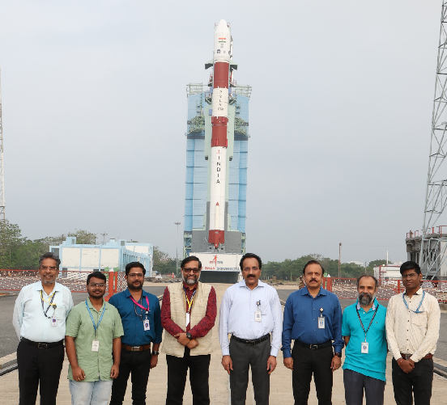

IIST · Thiruvananthapuram
B.Tech in Avionics
Indian Institute of Space Science and Technology.
Graduated 2025
Avionics engineer from IIST (B.Tech, 2025), data science student at IIT Madras, founder of RisingCompute, and Program Manager of InspireSat-3.
Flight software in orbit, edge AI shown to the ISRO Chairman, and a student satellite program I now lead.

Led the flight software for GRACE (PILOT-G2), flown on ISRO's PSLV Orbital Experimental Module in 2024.

YOLOv8 on a PolarFire FPGA at under 1 W, presented to Dr. V. Narayanan, Chairman of ISRO, at BSX 2026.

Leading the next satellite in the INSPIRE series, from design reviews to launch readiness.
An engineering degree in avionics, and a data science degree in progress online.
Indian Institute of Space Science and Technology.